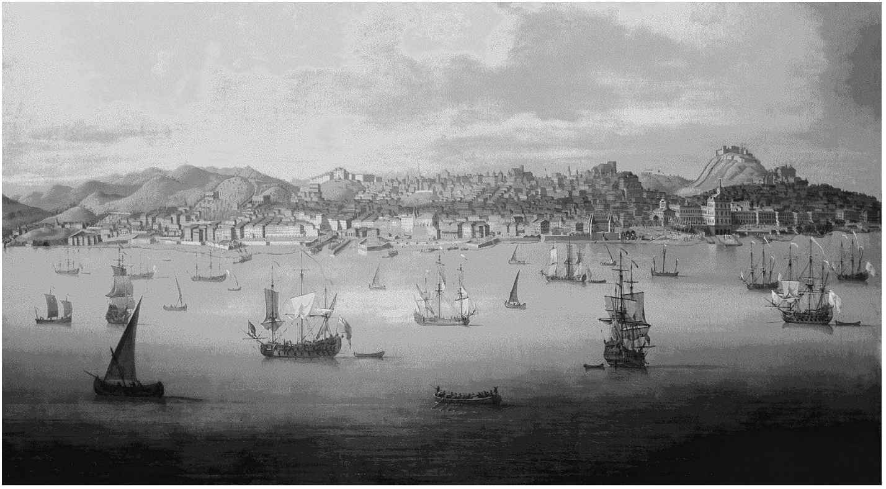

在直至1763年为止的这一时期中，全球性的政治关系同经济关系一样，发生了根本的变化。西欧人不再被扩张中的伊斯兰教围困在欧亚大陆西端。相反，他们已通过赢得对印度洋的控制，从南面包围了伊斯兰世界，而俄罗斯人则已通过征服西伯利亚，从北面包围了伊斯兰世界。与此同时，西欧人还发现了美洲大陆，为经济开发和殖民开辟了大片领土。他们也因之蓄积起巨大的资源和力量。
所有这一切说明，世界均势已发生了根本的、重大的变化——一个可与先前人口平衡方面的变化相比较的变化。以往，伊斯兰世界一向是主动出击的中心，它向四面八方探查并推进——伸入东南欧、撒哈拉以南非洲、中亚和东南亚。现在，一个能以全球规模而不仅仅是以欧亚大陆规模起作用的新中心已崛起。在这个新中心，先是从伊比利亚半岛，以后是从西北欧，一条条贸易和政治影响力的路线向各方伸展，围绕整个世界——向西到美洲，向南绕过非洲，向东到印度并绕过东南亚。
欧洲人到1763年时并未实际控制所有这些地区。但他们已有效地支配着那些人烟稀少的地区——美洲、西伯利亚以及后来的澳大利亚——尽管他们在世界各大陆进行的实际占据要等到19世纪才开始。在非洲和亚洲，西欧人在这一时期仅获得一些沿海据点，只有一个例外：荷兰人侵入好望角和东印度群岛。在别处，诸土著民族非常强大，且有高度严密的组织，不允许在美洲和西伯利亚发生的情况在他们那里重演。
例如，在西非，由于气候恶劣，欧洲人无法渗透到内陆。他们还受到沿海地区酋长们的阻挠，因为作为内地部落与欧洲人之间的中间人，酋长们处心积虑地想保住自己这一有利可图的地位。在印度，在达·伽马于1498年到达以后的250年中，欧洲人一直被疏远。在这两个半世纪里，他们能在少数港口经商，不过，显然是经土著统治者勉强同意才得以这样做的。在中国和日本，如同俄罗斯人在进入黑龙江流域时所发现的那样，欧洲人侵略领土的可能是根本不存在的。

图172 18世纪的贸易和帝国都要靠海军来维系和保护。这些海军沿着各条航线巡逻，保护本国船只免遭海盗与走私者的骚扰和敌军的进攻。这幅画（1735年）由彼得·摩纳米绘制，描绘的是停靠在葡萄牙里斯本港进行补给的英国帆船舰队的船只。英国和葡萄牙是主要的贸易伙伴，英国用羊毛交换葡萄牙的酒。
至此我们可以得出结论，在政治领域和在经济领域一样，1763年的欧洲正行进在半途中。它不再是欧亚大陆上一个比较孤立、无关紧要的半岛。它已在海外和陆上扩张，确立起对人烟稀少、军事上软弱的美洲和西伯利亚的控制。但是，在非洲、中东、南亚和东亚，欧洲人必须等到19世纪时才能宣称他们的统治。